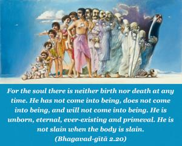
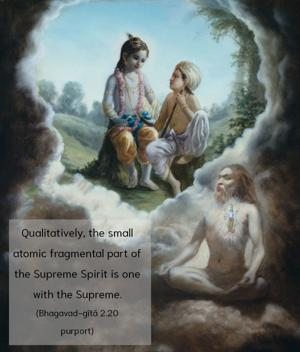
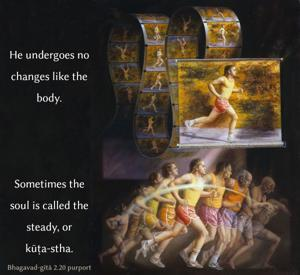

For the soul there is neither birth nor death at any time. He has not come into being, does not come into being, and will not come into being. He is unborn, eternal, ever-existing and primeval. He is not slain when the body is slain.



Qualitatively, the small atomic fragmental part of the Supreme Spirit is one with the Supreme. He undergoes no changes like the body. Sometimes the soul is called the steady, or kūṭa-stha. The body is subject to six kinds of transformations. It takes its birth from the womb of the mother’s body, remains for some time, grows, produces some effects, gradually dwindles, and at last vanishes into oblivion. The soul, however, does not go through such changes. The soul is not born, but, because he takes on a material body, the body takes its birth. The soul does not take birth there, and the soul does not die. Anything which has birth also has death. And because the soul has no birth, he therefore has no past, present or future. He is eternal, ever-existing and primeval – that is, there is no trace in history of his coming into being. Under the impression of the body, we seek the history of birth, etc., of the soul. The soul does not at any time become old, as the body does. The so-called old man, therefore, feels himself to be in the same spirit as in his childhood or youth. The changes of the body do not affect the soul. The soul does not deteriorate like a tree, nor anything material. The soul has no by-product either. The by-products of the body, namely children, are also different individual souls; and, owing to the body, they appear as children of a particular man. The body develops because of the soul’s presence, but the soul has neither offshoots nor change. Therefore, the soul is free from the six changes of the body.
In the Kaṭha Upaniṣad (1.2.18) we also find a similar passage, which reads:
na jāyate mriyate vā vipaścin
nāyaṁ kutaścin na babhūva kaścit
ajo nityaḥ śāśvato ’yaṁ purāṇo
na hanyate hanyamāne śarīre
The meaning and purport of this verse is the same as in the Bhagavad-gītā, but here in this verse there is one special word, vipaścit, which means learned or with knowledge.
The soul is full of knowledge, or full always with consciousness. Therefore, consciousness is the symptom of the soul. Even if one does not find the soul within the heart, where he is situated, one can still understand the presence of the soul simply by the presence of consciousness. Sometimes we do not find the sun in the sky owing to clouds, or for some other reason, but the light of the sun is always there, and we are convinced that it is therefore daytime. As soon as there is a little light in the sky early in the morning, we can understand that the sun is in the sky. Similarly, since there is some consciousness in all bodies – whether man or animal – we can understand the presence of the soul. This consciousness of the soul is, however, different from the consciousness of the Supreme because the supreme consciousness is all-knowledge – past, present and future. The consciousness of the individual soul is prone to be forgetful. When he is forgetful of his real nature, he obtains education and enlightenment from the superior lessons of Kṛṣṇa. But Kṛṣṇa is not like the forgetful soul. If so, Kṛṣṇa’s teachings of Bhagavad-gītā would be useless.
There are two kinds of souls – namely the minute particle soul (aṇu-ātmā) and the Supersoul (vibhu-ātmā). This is also confirmed in the Kaṭha Upaniṣad (1.2.20) in this way:
aṇor aṇīyān mahato mahīyān
ātmāsya jantor nihito guhāyām
tam akratuḥ paśyati vīta-śoko
dhātuḥ prasādān mahimānam ātmanaḥ
“Both the Supersoul [Paramātmā] and the atomic soul [ jīvātmā] are situated on the same tree of the body within the same heart of the living being, and only one who has become free from all material desires as well as lamentations can, by the grace of the Supreme, understand the glories of the soul.” Kṛṣṇa is the fountainhead of the Supersoul also, as it will be disclosed in the following chapters, and Arjuna is the atomic soul, forgetful of his real nature; therefore he requires to be enlightened by Kṛṣṇa, or by His bona fide representative (the spiritual master).